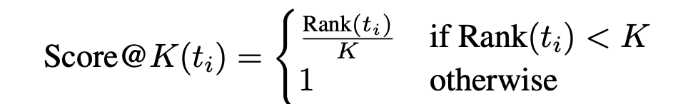
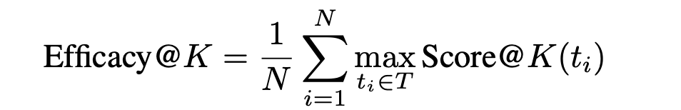
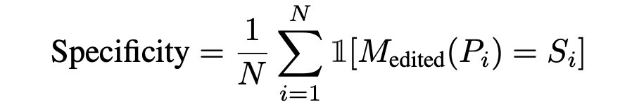

Unlearning Personally Identifiable Information from OLMo
December 10, 2024 • Anudeep Ragata
Introduction
Large Language Models risk the possibility of memorizing sensitive information about individuals. This project explores the problem of unlearning personally identifiable information (PII) from LLMs. I have adapted the paper which proposes a method that identifies and modifies a small subset of neurons relevant to each PII.
Methodology
To unlearn specific sensitive information, REVS identifies the model parameters most responsible for generating it. It then adjusts certain neuron representations to lower the prominence of the target tokens in each layer’s residuals, reducing their rank. This process minimizes the impact of edits on the overall model while reflecting the updated neuron values, effectively suppressing the sensitive information while preserving the model's general capabilities. The core process of REVS involves the following steps:
- 1. To unlearn a sensitive sequence S, select a subset of target tokens \(T= t_1,t_2,...,t_t\).
- 2. For each target sensitive token \(t_i \in T\), identify the layers where the rank of ti in the residual
hidden state vector his above a desired threshold rank \(r_h\).
- 3. Within these identified layers, select which neurons to edit,
- 4. Iteratively edit selected neurons to reduce rank of \(t_i\) below neuron threshold rank \(r_n\).
- 5. Update the model with the edited neurons.
Scores
1. Rank Score:
2. Efficacy:
3. Specificity:
4. Perplexity
Results
| Dataset | Method | Efficacy | Specificity | Perplexity |
|---|---|---|---|---|
| SSNs | Unedited | 0 | 100 | 12.142 |
| REVS | 99.95 | 71.53 | 12.172 | |
| Emails | Unedited | 0 | 100 | 8.324 |
| REVS | 96.89 | 70.77 | 8.609 | |
| Phone Numbers | Unedited | 0 | 100 | 12.027 |
| REVS | 99.94 | 71.89 | 12.112 |